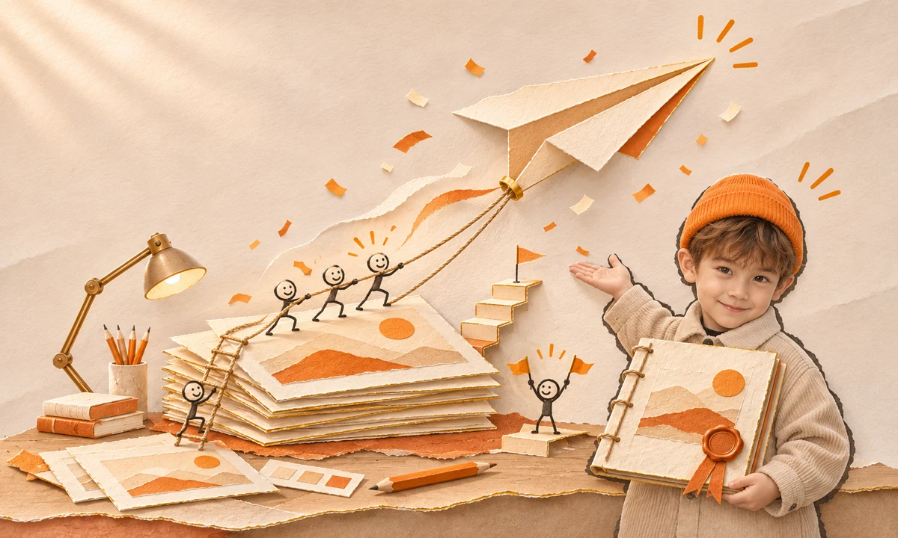

<svg xmlns="http://www.w3.org/2000/svg" viewBox="0 0 600 511.5" width="100%" style="display:block;width:100%;height:auto;" data-brand-frame="true"><rect width="600" height="511.5" fill="#FAF6ED" /><image href="brand-assets/paper.webp" x="0" y="0" width="600" height="511.5" preserveAspectRatio="xMidYMid slice" opacity="0.75" pointer-events="none" /><defs><clipPath id="brand_dd17454f0955468e8dbb0eec4bfad3c9_avatar"><rect x="24" y="18" width="62" height="62" rx="14" /></clipPath></defs><image href="brand-assets/avatar.webp" x="24" y="18" width="62" height="62" preserveAspectRatio="xMidYMid slice" opacity="1" pointer-events="none" clip-path="url(#brand_dd17454f0955468e8dbb0eec4bfad3c9_avatar)" /><text x="104" y="47" font-size="27" fill="#A94B21" font-weight="700" font-family="sans-serif">FRE.D 进一</text><text x="104" y="76" font-size="19" fill="#765B45" font-weight="400" font-family="sans-serif">AI · 商业 · 成长</text><path d="M24 96H576" stroke="#C6AA7B" stroke-width="1" /><svg viewBox="0 0 600 411.5" width="600" role="img" aria-label="按顺序点击查看图片" style="overflow:hidden;max-width:none;" x="0" y="100" height="411.5">
<image href="brand-assets/paper.webp" x="0" y="0" width="600.0" height="411.5" preserveAspectRatio="xMidYMid slice" opacity="0.6" pointer-events="none" /><g data-gallery-slide="3">
<rect width="600" height="411.5" fill="#FFF8EE" pointer-events="none" />
<image href="brand-assets/launch.webp" x="0" y="0" width="600" height="337.5" preserveAspectRatio="xMidYMid slice" pointer-events="none"><title>带着作品出发</title></image>
<text x="24" y="385.5" fill="#352D25" font-size="36" font-family="sans-serif" xml:space="preserve" pointer-events="none">第三张，停留在这里</text>

</g><g data-gallery-slide="2">
<rect width="600" height="411.5" fill="#FFF8EE" pointer-events="none" />
<image href="brand-assets/studio.webp" x="0" y="0" width="600" height="337.5" preserveAspectRatio="xMidYMid slice" pointer-events="none"><title>创作工作台</title></image>
<text x="24" y="385.5" fill="#352D25" font-size="36" font-family="sans-serif" xml:space="preserve" pointer-events="none">第二张，按顺序展示</text>
<animateTransform attributeName="transform" type="translate" values="0 0;-600 0" begin="click" dur="0.35s" fill="freeze" restart="never" />
<rect width="600" height="411.5" fill="#000000" fill-opacity="0" pointer-events="all" data-gallery-trigger="tap">
  <animate attributeName="width" begin="click" from="600" to="0" dur="0.001s" fill="freeze" restart="never" />
</rect>
</g><g data-gallery-slide="1">
<rect width="600" height="411.5" fill="#FFF8EE" pointer-events="none" />
<image href="brand-assets/idea.webp" x="0" y="0" width="600" height="337.5" preserveAspectRatio="xMidYMid slice" pointer-events="none"><title>想法探索</title></image>
<text x="24" y="385.5" fill="#352D25" font-size="36" font-family="sans-serif" xml:space="preserve" pointer-events="none">第一张，准备素材</text>
<animateTransform attributeName="transform" type="translate" values="0 0;-600 0" begin="click" dur="0.35s" fill="freeze" restart="never" />
<rect width="600" height="411.5" fill="#000000" fill-opacity="0" pointer-events="all" data-gallery-trigger="tap">
  <animate attributeName="width" begin="click" from="600" to="0" dur="0.001s" fill="freeze" restart="never" />
</rect>
</g>
</svg>
</svg><div id="gallery-scroll" aria-label="横向图片图集"></div>